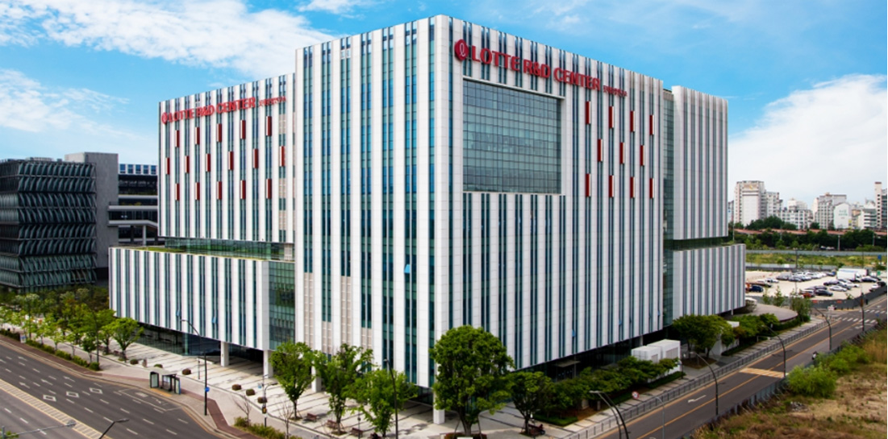

HOME > 연구소안내 > 연구소소개
연구소소개
국내 최고의 종합식품연구소
롯데중앙연구소는 최신 연구설비를 갖추고 있으며 우수한 식품 전문가들로 구성된 국내 최고의 종합식품연구소입니다. 연구분야는 크게 기초연구, 제품개발, 안전센터로 이루어져 있으며 최근에는 제품개발뿐만 아니라 신 성장동력 발굴을 위하여 기초부문에 집중하고 있습니다.소비자가 안전한 제품을 안심하고 접할 수 있도록 하는 안전센터도 중요한 역할을 담당하고 있습니다
-
- “풍요로운 삶” 을 위한 지난 30년
- 지난 30여 년 동안 소비자와 가장 가까운 곳에서 함께 한 롯데식품은 소비자의 풍요로운 삶을 위하여 지속적인 노력을 하고 있습니다.
-
- 식품 산업의 미래를 향한 도전
- “Better Food, Better Life”라는 가치를 내걸고 식품산업의 미래를 개척하고자 노력하고 있습니다.
-
- 식품 산업의 미래를 향한 도전
- 롯데는 국내를 넘어 세계를 선도하기 위해 글로벌 시장에 진입하였습니다. 고객의 기대를 결코 저버리지 않는 롯데중앙연구소가 되겠습니다.
연구소 역활
-
- 품질개선
- 기존 제품에서 머무르지 않고,보다 더 좋은 맛과 건강을 위하여 제품 개 선 연구를 진행합니다.
-
- 신제품개발
- 창의적 아이디어로 새 로운 제품을 기획하고 개발합니다.
-
- 원가개선
- 품질은 높이고 제품 가 격은 낮출 수 있도록 다 양한 절감방안을 찾는 노력을 합니다.
-
- 안전관리
- 식품 위생 및 안전 관리를 위하여 철저한 관리 감독을진행합니다.
-
- 기술확보
- 식품산업을 이끌 최고의 기술력 확보를 위하여 선 진기술을 습득하고 기존 노하우를 연구를 합니다.